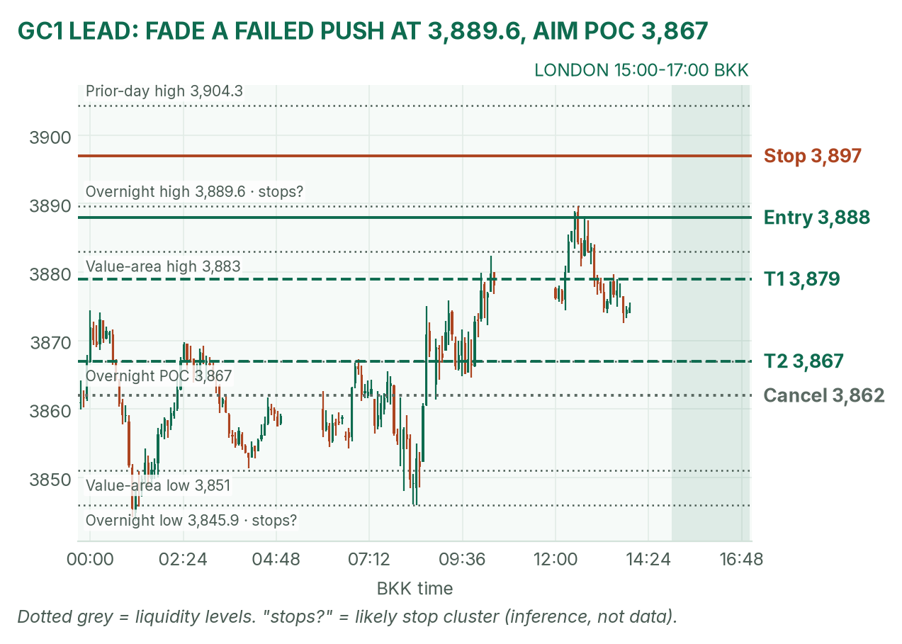
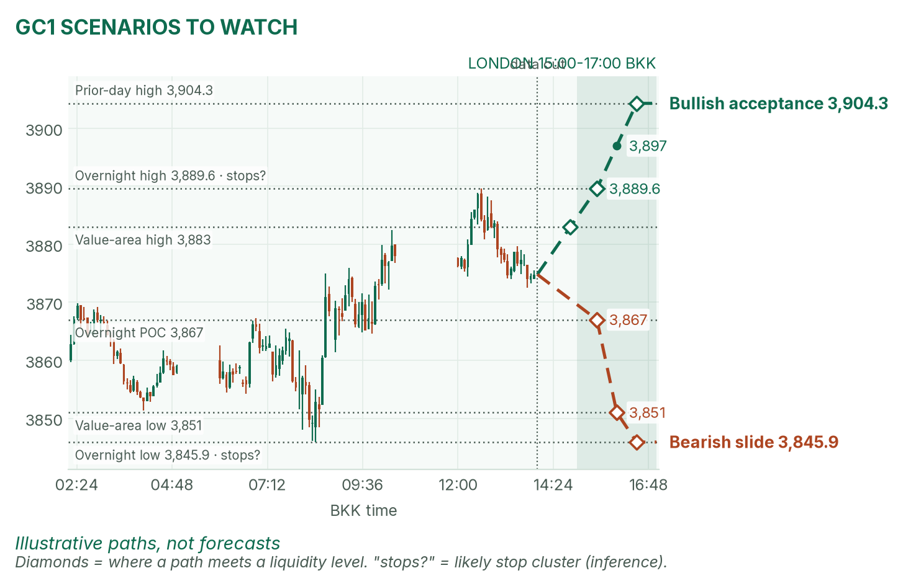
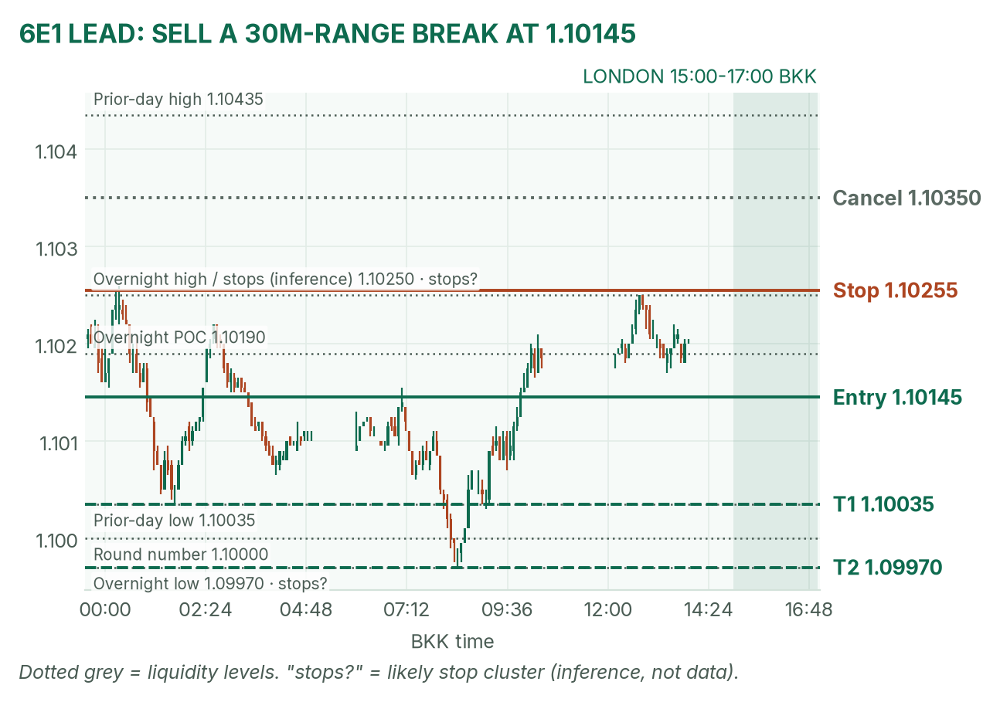
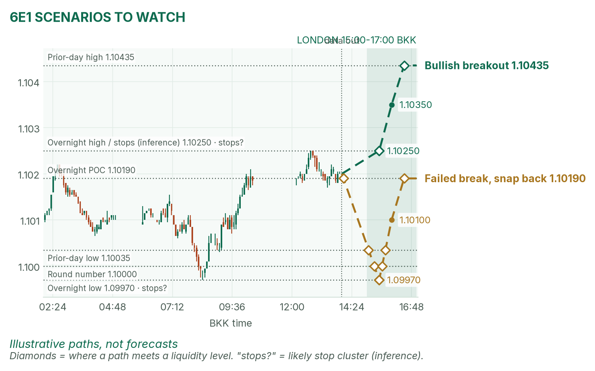

Gold bounced 44 points off its low and the euro sits at its overnight high. London opens into a pause, not a recovery.
Window 15:00–17:00 BKK (UK on GMT). Data cut 14:00 BKK: GC 3,874.8, 6E 1.1020 (Dec contracts, last completed 5-minute bar). Backup data again: TopstepX refused login, so levels come from Yahoo Finance futures bars (about 10 minutes delayed). Levels only, flat by 16:55. Ideas, not advice. April's pre-London brief (~13:00 BKK) was read.
Summary
GC: sell only a failed push at the 3,889.6 overnight high, entry near 3,888, stop 3,897, targets 3,879 and the 3,867 POC. About 30%. It sides with the hawkish Fed.
6E: sell a break of the London range at 1.10145, stop 1.10255, targets 1.10035 and 1.0997. About 35%, with the firm dollar.
German ZEW lands at 17:00, right at the window close. Be flat by 16:55.
The market story
The big weight is still the Fed: markets price a 95.5% chance of a December hike, the 10-year yield is 5.123%, and the dollar touched a fresh 19-month high in Asia (April's brief, CNBC, CME FedWatch).
Gold fell to 3,835.2 on Monday, then bounced from 3,845.9 at 08:25 to 3,889.6 at 12:35 and has eased to 3,874.8. Its overnight value area (where about 70% of trading happened) is a wide 3,851–3,883, so it is ranging, not trending. The euro climbed from 1.0997 to 1.1025 and sits near the top of a thin range. My read: macro leans down for both; the charts say range, so I want to sell edges, not chase.
News (BKK)
Time
Event
Forecast
Prior
Read
14:00
UK jobs and wages (pay growth)
3.5%
3.7%
Out before the window; print not verified here.
17:00
German ZEW investor sentiment
28.8
28.1
At the window close. Hot helps the euro, cold weighs on it. No-trade zone 16:55–17:02.
20:30
US October retail sales (m/m)
+0.2%
+0.8%
After the window, the session decider. Hot means higher yields, bad for gold and the euro.
Source: April's brief (Sruth calendar, MarketWatch).
Levels to watch
Level
GC
6E
Monday high / low
3,904.3 / 3,835.2
1.10435 / 1.10035
Overnight high (since 06:00)
3,889.6
1.1025
Overnight value area
3,851–3,883
1.0999–1.1024
Overnight POC (busiest price)
3,867
1.1019
Last-hour high / low
3,884.0 / 3,872.5
1.1024 / 1.1017
Overnight low
3,845.9
1.0997
Typical London range (last 3, median)
about 14.5 points
about 16 pips
Gold (GC1)
Bias: down on macro, ranging on the chart. The London gold rule: mark the 15:00–15:30 range and fade its edges back toward the POC. My volatility model expects roughly 3,868 to 3,883.
The trade: mean-reversion sell
Entry
3,886–3,889 (plan 3,888), after 15:30, only on a push into the 3,889.6 overnight high that closes back below 3,886 on the 5-minute chart
Stop
3,897, above the overnight high where buy stops likely sit (my inference)
Targets
1R partial 3,879 · full target 3,867 POC (2.3R)
Cancel
Gold trades at 3,862 before the push, a 15m close above 3,897, or no fill by 16:30
Probability
~30% for the full target, an estimate. Basis: GC London range fades worked best in 42 sessions (not statistically significant); 21 points is above the 14.5-point median range.
Why: a poke above an obvious high that fails is a liquidity grab. No rejection, no trade. April agrees: in her base case the 3,845.9–3,889.6 range holds until Nvidia.

GC 5-minute bars into the 14:00 cut. The sell sits just under the overnight high.

Illustrative paths, not forecasts.
Scenarios to watch
Bullish acceptance: a 15m close above 3,889.6 that holds. Aims for 3,897, then Monday's 3,904.3 high.
Bearish slide: a 15m close below the 3,867 POC. Aims for 3,851, then the 3,845.9 overnight low.
Euro (6E1)
Bias: down, with the dollar. The euro is pinned under 1.1025 with a thin value area, so a break should travel. The 6E London rule is to trade breakouts of the 15:00–15:30 range. A pip is 0.0001.
The trade: bearish range breakdown
Entry
Sell stop 1.10145 after 15:30, under the 1.1019 POC and the 1.1017 last-hour low; skip if the 30m range low is already below 1.1016
A trade above 1.1035 before the fill, or no break by 16:30
Probability
~35%, an estimate. Basis: 6E London range breakouts averaged +0.31R over 26 sessions; 17.5 pips is about one median London range.
Why: the rule follows the break, and the dollar is the stronger hand. April partly agrees: the dollar is firm, but she expects ranges to hold until retail sales.

6E 5-minute bars into the 14:00 cut. The entry sits under the POC.

Illustrative paths, not forecasts.
Scenarios to watch
Bullish breakout: a 5m close above 1.1025. Aims for 1.1035, then Monday's 1.10435 high.
Mean reversion: a break under 1.0997 that fails back inside. Aims for 1.1010, then the 1.1019 POC.
NQ (not traded): about 27,301 at the cut, mid-range between 27,180.5 and 27,443.25.
Before you click
ORB bases. GC London: 15:00–15:30 range, fade to POC. GC NY: 20:20 COMEX open until a 2-minute candle's volume drops below half the first two's average, fade to POC. 6E London: 15:00–15:30 range, trade breakouts. NQ NY: 21:30–21:35 range, trade breakouts.
Checklist. Room to max loss? Daily rules OK? No release within 30 minutes? With the bias? At a marked level? Setup tagged? Entry, stop, 1R partial, target set? Calm, not chasing?
Reset (60 seconds). Hands off the mouse. Breathe in 4, hold 4, out 6, five times. Name the feeling in one word. Say the plan aloud. "Eager" or "frustrated"? Wait 5 minutes.